spark RDD keyvalue操作
主要在PairRDDFunctions内实现，通过隐式转换使kv形式的RDD具有这个类中的方法。
隐式转换代码如下，在SparkContext中进行，一定要是RDD[(K,V)]型的才可以被转换1
implicit def rddToPairRDDFunctions[K: ClassTag, V: ClassTag](rdd: RDD[(K, V)]) = new PairRDDFunctions(rdd)
note:写spark程序时使用PairRDDFunctions中的方法时会报错，需要import SparkContext._ ，使object SparkContext中的所有方法都能被引入进来。
涉及shuffle的操作
keyvalue shuffle操作一般都不支持key是Array的情况，除非是自己写的partitioner
keyvalue shuffle操作主要分成两类：对一个RDD按key进行聚合combineByKey、partitionBy 以及对多个RDD按key进行相关操作cogroup、subtractByKey。
partitionBy
只使用ShuffledRDD(单个RDD shuffle最基本、纯粹的形态)。
对shuffle的结果不做处理，返回类型是Iterator[Pair]。即只对key进行partition操作，value不做任何处理。
其实spark应该也要实现通用的多RDD shuffle的类似ShuffledRDD的RDD (返回(rddi,Iterator))，这样CoGroupedRDD和SubtractedRDD就可以基于该RDD进行后续处理。不知道spark以后会不会添加。

shffule过程这里只是简单画了下，以后再写其他文章来深入讲解这块。
###combineByKey
先上代码：1
2
3
4
5
6
7
8
9
10
11
12
13
14
15
16
17
18
19
20
21
22
23
24
25
26
27
28
29
30
31
32
33
34
35
36
37
38
39def combineByKey[C](createCombiner: V => C,
mergeValue: (C, V) => C,
mergeCombiners: (C, C) => C,
partitioner: Partitioner,
mapSideCombine: Boolean = true,
serializer: Serializer = null): RDD[(K, C)] = {
require(mergeCombiners != null, "mergeCombiners must be defined") // required as of Spark 0.9.0
if (keyClass.isArray) { //key是数组时需要特殊的partitioner，默认的HashPartitioner不支持数组
if (mapSideCombine) {
throw new SparkException("Cannot use map-side combining with array keys.")
}
if (partitioner.isInstanceOf[HashPartitioner]) {
throw new SparkException("Default partitioner cannot partition array keys.")
}
}
val aggregator = new Aggregator[K, V, C](createCombiner, mergeValue, mergeCombiners)
if (self.partitioner == Some(partitioner)) {
self.mapPartitionsWithContext((context, iter) => {
new InterruptibleIterator(context, aggregator.combineValuesByKey(iter, context))
}, preservesPartitioning = true)
} else if (mapSideCombine) { //默认启用。先在各worker上进行combine,以减少数据量，相当于mapreduce的combine操作
val combined = self.mapPartitionsWithContext((context, iter) => {//在各分区先进行按Key聚合
aggregator.combineValuesByKey(iter, context)
}, preservesPartitioning = true)
//进行shuffle过程对key进行分组
val partitioned = new ShuffledRDD[K, C, (K, C)](combined, partitioner)
.setSerializer(serializer)
//在新分区上按Key将value list进行合并
partitioned.mapPartitionsWithContext((context, iter) => {
new InterruptibleIterator(context, aggregator.combineCombinersByKey(iter, context))
}, preservesPartitioning = true)
} else {
// Don't apply map-side combiner.
val values = new ShuffledRDD[K, V, (K, V)](self, partitioner).setSerializer(serializer)
values.mapPartitionsWithContext((context, iter) => {
new InterruptibleIterator(context, aggregator.combineValuesByKey(iter, context))
}, preservesPartitioning = true)
}
}

主要参数介绍：
createCombiner、mergeValue、mergeCombiners在Aggregator中使用，其实是在AppendOnlyMap/ExternalAppendOnlyMap(详见AppendOnlyMap/ExternalAppendOnlyMap)中使用。
Aggregator中使用了AppendOnlyMap/ExternalAppendOnlyMap。
createCombiner：当Map中无对应的key时，则创建Combiner(如List等)，并将value放到该Combiner中。即完成Value->Combiner。
mergeValue：当Map中存在相应的key时，则将value添加到对应的Combiner中。
mergeCombiners：将各Combiner进行合并。
aggregator.combineValuesByKey：按key合并value，些时value是基本的value还非Combiner。当AppendOnlyMap中无key时，进行createCombiner，有key时进行mergeValue。
aggregator.combineCombinersByKey：些时value已经是Combiner(因为该步的数据其实是由ShuffleRDD的前一个RDD进行shffule的，即调用了aggregator.combineValuesByKey将结果转成Combiner)，当AppendOnlyMap中无key时，新的c作为value，有key时进行将新Combiner与旧Combiner进行合并。
主要流程(mapSideCombine=true)：
1、在各分区上先按key将value进行聚合：aggregator.combineValuesByKey()
2、shuffle阶段，new ShuffleRDD
map端：各分区按key.hash将各kvpair写到对应的bucket中
reduce端：ShuffleRDD.compute()。 从map端fetch本reduce负责的key对应的kvpairs Iterator
3、对ShuffleRDD生成的各分区进行按key将对应的多个value list进行合并：aggregator.combineCombinersByKey
combineByKey形成的stage的描述会是调用combineByKey所在的行，其实应该是ShuffleRDD的前一个RDD即MapPartititionRDD，但由于是在combineByKey中进行创建。
最常见的reduceByKey形成的stage的描述也是reduceByKey。
以下是使用combineByKey的RDD
reduceByKey
对RDD按key聚合并进行func运算作为新value。1
2
3
4
5
6
7
8
9
10
11def reduceByKey(partitioner: Partitioner, func: (V, V) => V): RDD[(K, V)] = {
combineByKey[V]((v: V) => v, func, func, partitioner)
}
def reduceByKey(func: (V, V) => V, numPartitions: Int): RDD[(K, V)] = {
reduceByKey(new HashPartitioner(numPartitions), func)
}
def reduceByKey(func: (V, V) => V): RDD[(K, V)] = {
reduceByKey(defaultPartitioner(self), func)
}
numPartitions是shuffle的reduce端的RDD的分区数。不使用该值则调用defaultPartitioner(),该方法是未设置spark.default.parallelism时默认为ShuffleRDD依赖的父RDD中最大的分区。
流程：在各分区上通过func对数据进行按key聚合；进行shuffle，将key分配到相应的新分区上。在生成的新分区中再调用func进行按key聚合。
groupByKey
对RDD按key聚合，新value是聚合的value list1
2
3
4
5
6
7
8
9
10
11def groupByKey(partitioner: Partitioner): RDD[(K, Iterable[V])] = {
// groupByKey shouldn't use map side combine because map side combine does not
// reduce the amount of data shuffled and requires all map side data be inserted
// into a hash table, leading to more objects in the old gen.
def createCombiner(v: V) = ArrayBuffer(v)
def mergeValue(buf: ArrayBuffer[V], v: V) = buf += v
def mergeCombiners(c1: ArrayBuffer[V], c2: ArrayBuffer[V]) = c1 ++ c2
val bufs = combineByKey[ArrayBuffer[V]](
createCombiner _, mergeValue _, mergeCombiners _, partitioner, mapSideCombine=false)
bufs.mapValues(_.toIterable)
}
原理是当Key不存在时创建ArrayBuffer(v)，存在时将v加到该ArrayBuffer中，然后将各ArrayBuffer按key进行合并。
note:groupByKey中的mapSideCombine=false，因为其保留所有的值，所以不需要mapSideCombine
foldByKey
该方法具体还不知道有什么实际应用场景…1
2
3
4
5
6
7
8
9
10
11
12def foldByKey(zeroValue: V, partitioner: Partitioner)(func: (V, V) => V): RDD[(K, V)] = {
// Serialize the zero value to a byte array so that we can get a new clone of it on each key
val zeroBuffer = SparkEnv.get.closureSerializer.newInstance().serialize(zeroValue)
val zeroArray = new Array[Byte](zeroBuffer.limit)
zeroBuffer.get(zeroArray)
// When deserializing, use a lazy val to create just one instance of the serializer per task
lazy val cachedSerializer = SparkEnv.get.closureSerializer.newInstance()
def createZero() = cachedSerializer.deserialize[V](ByteBuffer.wrap(zeroArray))
combineByKey[V]((v: V) => func(createZero(), v), func, func, partitioner)
}
createZero()即copy一份和zeroValue一样的数据。其会在每个key第一次放到AppendOnlyMap中时调用。和fold一样，它要求func的两个参数是同类型的。
关于zeroValue这里举个例子进行说明：1
2
3
4val a = sc.parallelize(List("dog", "tiger", "cat", "lion", "panther", "eagle"), 2)
val b = a.map(x => (x.length, x))
b.foldByKey("X")(_ + _).collect
//结果是: Array[(Int, String)] = Array((4,Xlion), (3,XdogXcat), (7,Xpanther), (5,XtigerXeagle))
因为combineKey操作中：
1、各分区进行aggregator.combineValuesByKey， 而createZero()即X会在key第一次加入到Map中被使用，即结果为分区1：(3,Xdogcat),(5:Xtiger)； 分区2:(4:Xlion),(7,Xpanther),(5,Xeagle)
2、进行shuffle后分区1: (3,Xdogcat),(4,Xlion) 分区2:(5,Xtiger),(5,Xeagle),(7,Xpanther)。 真实分区可能不是这样，这里只是举例。
3、各分区进行aggregator.combineCombinersByKey，将相同key的值进行合并，即结果为分区1：(3,Xdogcat),(4,Xlion), 分区2：(5,XtigerXeagle),(7,Xpanther)
###cogroup1
2
3
4
5
6
7
8
9
10
11
12
13
14
15
16
17
18
19
20
21
22 //两个RDD进行cogroup
def cogroup[W](other: RDD[(K, W)], partitioner: Partitioner): RDD[(K, (Iterable[V], Iterable[W]))] = {
if (partitioner.isInstanceOf[HashPartitioner] && keyClass.isArray) {
throw new SparkException("Default partitioner cannot partition array keys.")
}
val cg = new CoGroupedRDD[K](Seq(self, other), partitioner)
cg.mapValues { case Seq(vs, ws) =>
(vs.asInstanceOf[Seq[V]], ws.asInstanceOf[Seq[W]])
}
}
//三个RDD进行cogroup
def cogroup[W1, W2](other1: RDD[(K, W1)], other2: RDD[(K, W2)], partitioner: Partitioner): RDD[(K, (Iterable[V], Iterable[W1], Iterable[W2]))] = {
if (partitioner.isInstanceOf[HashPartitioner] && keyClass.isArray) {//Key是数组时要注意
throw new SparkException("Default partitioner cannot partition array keys.")
}
val cg = new CoGroupedRDD[K](Seq(self, other1, other2), partitioner)
cg.mapValues { case Seq(vs, w1s, w2s) =>
(vs.asInstanceOf[Seq[V]],
w1s.asInstanceOf[Seq[W1]],
w2s.asInstanceOf[Seq[W2]])
}
}

流程，以两个RDD进行cogroup为例：
1、创建CoGroupedRDD，该RDD的dependency都是ShuffleDependency (当其两个父RDD的partitioner==Some(part)时是NarrowDependency, 这个以后再研究。大部分情况都是partitioner!=Some(part))。 于是会产生Shuffle过程：
map端：两个父RDD都会将其分区数据写到相应的bucket中。
reduce端：每个rdd都会通过SparkEnv.get.shuffleFetcher获得相应分区所负责的key的Iterator数据，通过AppendOnlyMap/ExternalAppendOnlyMap对从map阶段各分区得到的结果进行聚合形成新的Iterator。
得到的结果是RDD[(K, Seq[Seq[_]])], 即对于每个Key, 都是Array[ArrayBuffer], 该二维数组存了各个RDD的聚合结果(即外层数组长度是rdd的个数)，里面的是具体某个RDD对应Key的value list。这里只看使用ExternalAppendOnlyMap的核心代码，AppendOnlyMap与之类似。1
2
3
4
5
6
7
8
9
10
11
12
13
14
15
16val createCombiner: (CoGroupValue => CoGroupCombiner) = value => {
val newCombiner = Array.fill(numRdds)(new CoGroup)
value match { case (v, depNum) => newCombiner(depNum) += v }
newCombiner
}
val mergeValue: (CoGroupCombiner, CoGroupValue) => CoGroupCombiner =
(combiner, value) => {
value match { case (v, depNum) => combiner(depNum) += v }
combiner
}
val mergeCombiners: (CoGroupCombiner, CoGroupCombiner) => CoGroupCombiner =
(combiner1, combiner2) => {
combiner1.zip(combiner2).map { case (v1, v2) => v1 ++ v2 }
}
new ExternalAppendOnlyMap[K, CoGroupValue, CoGroupCombiner](
createCombiner, mergeValue, mergeCombiners)
createCombiner:当相应key不存在时，会创建一个二维数据，该二维数组存了各个RDD的聚合结果。
mergeValue: 当相应key存在时进行value的merge。value的形式是(v,rddNum), 根据rddNum找到二维数组中相应RDD的结果数组，将新的v添加到该数组中
mergeCombiners: 多个Iterator(一个mem Iterator与多个DiskMapIterator)在优先队列dequeue操作时将key相同的kvpairs的value进行合并。
2、通过mapValues对value进行处理：即将前面得到的二维数组seq(vs,ws)转化成tuple形式,vs和ws是各rdd相应key的value list。 最后得到的结果就是RDD[K,(Iterable[V], Iterable[W])]
以下是使用cogroup的RDD, 主要是各种Join操作
join
只会保留两个rdd共同key对应的记录1
2
3
4
5def join[W](other: RDD[(K, W)], partitioner: Partitioner): RDD[(K, (V, W))] = {
this.cogroup(other, partitioner).flatMapValues { case (vs, ws) =>
for (v <- vs; w <- ws) yield (v, w)
}
}
使用flatMapValues将cogroup生成的(k,(vs,ws))转成(k,(v,w))列表。
flatMapValues会创建FlatMappedValuesRDD，其compute方法为：1
2
3
4
5override def compute(split: Partition, context: TaskContext) = {
firstParent[Product2[K, V]].iterator(split, context).flatMap { case Product2(k, v) =>
f(v).map(x => (k, x))
}
}
这里的f即flatMapValues方法中声明的方法。(K,(Iterable[V], Iterable[W])) 会先被flatMap方法调用，其中的f会对(Iterable[V], Iterable[W])进行循环遍历生成(v,s)。然后flatMap再产生(k,(v,s))
leftOuterJoin
左rdd的所有key都被保留1
2
3
4
5
6
7
8
9def leftOuterJoin[W](other: RDD[(K, W)], partitioner: Partitioner): RDD[(K, (V, Option[W]))] = {
this.cogroup(other, partitioner).flatMapValues { case (vs, ws) =>
if (ws.isEmpty) {
vs.map(v => (v, None))
} else {
for (v <- vs; w <- ws) yield (v, Some(w))
}
}
}
和join差不多，只是当ws(右rdd)是空时会输出(k,(v,None)), ws不空时会输出(k,(v,Some(w)))。 第二个RDD的value是Optition类型，个人猜测是便于判断是否为空的处理。
rightOuterJoin
右rdd的所有key都被保留1
2
3
4
5
6
7
8
9def rightOuterJoin[W](other: RDD[(K, W)], partitioner: Partitioner): RDD[(K, (Option[V], W))] = {
this.cogroup(other, partitioner).flatMapValues { case (vs, ws) =>
if (vs.isEmpty) {
ws.map(w => (None, w))
} else {
for (v <- vs; w <- ws) yield (Some(v), w)
}
}
}
和join差不多，只是当vs(左rdd)是空时会输出(k,(None,w)), ws不空时会输出(k,(Some(v),w))。
note:实际应用中经常会有不止2个rdd join的情况，可以用rdd1 join rdd2 join rdd3, 但这样会发生两次shuffle, 所以当3个rdd join可以使用cogroup(other1,other2)来实现自己的join方法，这样只需要一次shuffle，更多的话只能自己模仿cogroup来写了,毕竟CoGroupedRDD是支持Seq(rdd)的,工作量应该会少些。spark能写个通用的支持任意多个join的就好了…
groupWith
Alias for cogroup。 只是调用cogroup不做任何处理。
subtractByKey
rdd1.subtractByKey(rdd2), 去掉rdd1中与rdd2共有的key对应的kvpairs.
主要使用SubtractedRDD， 其dependency也是两个ShuffleDependency, compute方法见下面代码：1
2
3
4
5
6
7
8
9
10
11
12
13
14
15
16
17
18
19
20
21
22
23
24
25
26
27
28
29override def compute(p: Partition, context: TaskContext): Iterator[(K, V)] = {
val partition = p.asInstanceOf[CoGroupPartition]
val ser = Serializer.getSerializer(serializer)
val map = new JHashMap[K, ArrayBuffer[V]]
def getSeq(k: K): ArrayBuffer[V] = {
val seq = map.get(k)
if (seq != null) {
seq
} else {
val seq = new ArrayBuffer[V]()
map.put(k, seq)
seq
}
}
def integrate(dep: CoGroupSplitDep, op: Product2[K, V] => Unit) = dep match {
case NarrowCoGroupSplitDep(rdd, _, itsSplit) =>
rdd.iterator(itsSplit, context).asInstanceOf[Iterator[Product2[K, V]]].foreach(op)
case ShuffleCoGroupSplitDep(shuffleId) =>
val iter = SparkEnv.get.shuffleFetcher.fetch[Product2[K, V]](shuffleId, partition.index,
context, ser)
iter.foreach(op)
}
// the first dep is rdd1; add all values to the map
integrate(partition.deps(0), t => getSeq(t._1) += t._2)
// the second dep is rdd2; remove all of its keys
integrate(partition.deps(1), t => map.remove(t._1))
map.iterator.map { t => t._2.iterator.map { (t._1, _) } }.flatten
}
shuffle的map阶段和cogroup一样，在reduce阶段有很大差异(其实可以用leftOuterJoin来实现该功能，只保留右rdd对应的值为None的记录，之所以没用时因为cogroup的reduce阶段会比subtractByKey的复杂很多以及多做一些不必要的工作，如要外排、右rdd的值也被保存等)。
reduce阶段：
1、创建一个HashMap
2、integrate方法通过SparkEnv.get.shuffleFetcher获得相应依赖rdd的map阶段的数据，并对每个数据进行相应的操作：
左rdd: 将记录存到HashMap中，遇到相同key则将value合并到数组中。左rdd的记录就都在内存中
右rdd: 遍历右rdd的记录，不断从HashMap中称除右rdd中出现的key
3、将(k,Seq(v))转化成(k,v)列表
note:从实现可以看出subtractByKey用于rdd1比rdd2少很多的情况，因为rdd1是存在内存，rdd2只要遍历stream即可。如果rdd1很大，且reduce数较少的情况可能发生OOM。如果rdd1很大可以考虑使用cogroup来实现
transform
mapValues
mapValues(f)，key不变，只对value进行f操作。
使用MappedValuesRDD。compute方法：1
firstParent[Product2[K, V]].iterator(split, context).map { case Product2(k ,v) => (k, f(v)) }
flatMapValues
作用于(k,Iterator(v))的数据集合。
flatMapValues(f)
使用FlatMappedValuesRDD，其compute方法为：1
2
3
4
5override def compute(split: Partition, context: TaskContext) = {
firstParent[Product2[K, V]].iterator(split, context).flatMap { case Product2(k, v) =>
f(v).map(x => (k, x))
}
}
原理是 对value=Iterator(v)进行操作后(如将该集合拆开)，然后对生成的每个v 添加key形成Iterator(k,v), 而flatMap则是遍历新生成的Iterator(k,v).iterator从而输出各个kv
keys
返回key数据集合 map(._1)
values
返回value数据集合 map(._2)
sortByKey
该方法在OrderedRDDFunctions中，实现了按key进行排序。
原理：采用RangePartitioner而不是HashPartitioner。
RangePartitioner是对原数据集进行抽样得到sample，然后得到sample的key，对这些key进行排序，然后根据分区数来设置几分位点的值rangeBounds(初始化rangeBounds时的sample会触发count以及collect action)。这样在shuffle时就会按key在rangeBounds属于哪个范围来决定所在分区，此时已经保证前一个分区都小于后一个分区(升序例)。
shuffle结束后对每个分区的数据按key进行排序，这样就实现了按key排序(此过程是将ite.toArray到本地，然后按key排序。当数据倾斜时有可能OOM)。
note:如果数据集中key全部都一样，分区为3个，这样所有数据都会分到第一个分区，其他分区的元素个数为0，导致数据倾斜
action
reduceByKeyLocally
reduceByKeyLocally(func)不要和reduceByKey混淆,它是一个action。该方法主要用于将RDD[K,V]转化成drvier上的Map[K,V]
原理：
1、创建map
2、调用mapParitition对整个分区进行操作，具体是遍历该分区上的kv，判断key是否在map中，不在的话直接将该kvpair放到map中，否则将map中该key的value按func与v进行更新。该过程得到的是Iterator[HashMap]类型，即将各个分区转变成了一个HashMap
3、调用reduce。reduce中的方法是将两个map进行合并，即先在各分区上进行map合并(各分区就一个map)，然后将各分区的map传到driver进行map的两两合并得到最终结果。
collectAsMap
将RDD转成Map。
先调用collect()将kvparis汇总到driver上，然后将kvpairs放到Map中。
note：遇到相同key时后来的value会把之前的value给覆盖，如果需要将value进行合并，则用reduceByKeyLocally
lookup
通过key获得其所有的value。1
2
3
4
5
6
7
8
9
10
11
12
13
14
15
16
17def lookup(key: K): Seq[V] = {
self.partitioner match {
case Some(p) =>
val index = p.getPartition(key)
def process(it: Iterator[(K, V)]): Seq[V] = {
val buf = new ArrayBuffer[V]
for ((k, v) <- it if k == key) {
buf += v
}
buf
}
val res = self.context.runJob(self, process _, Array(index), false)
res(0)
case None =>
self.filter(_._1 == key).map(_._2).collect()
}
}
当该RDD有自己的partitioner时，即key已经按partitioner分好。则可以通过partitioner.getPartition(key)找到所在分区，从该分区中获得数据即可。
否则通过filter获得k = key的记录，通过map获得value，然后collect()输出value.